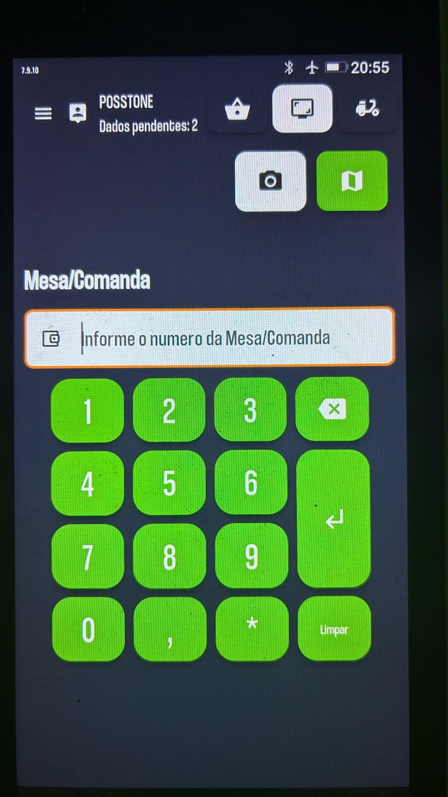
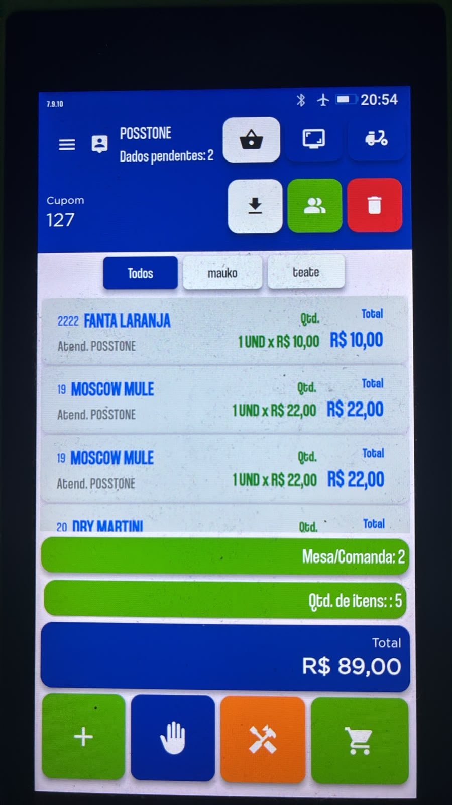
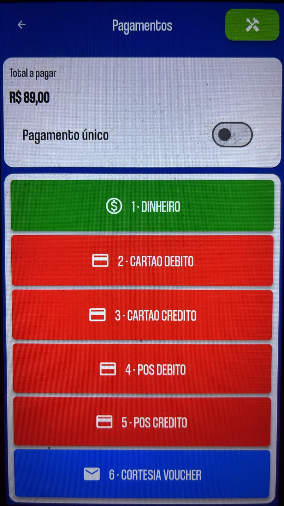

▦
PDV rápido e intuitivo
Venda com agilidade no balcão, mesa, comanda ou delivery, com emissão fiscal e formas de pagamento integradas.
Atendimento mais rápidoControle vendas, mesas, comandas, estoque, produção, financeiro, delivery, TEF e emissão fiscal em uma única plataforma, com implantação, treinamento e suporte especializado.

A IA-XTECH conecta toda a rotina do negócio para reduzir erros, evitar retrabalho, controlar custos e melhorar a experiência do cliente.
Venda com agilidade no balcão, mesa, comanda ou delivery, com emissão fiscal e formas de pagamento integradas.
Atendimento mais rápidoAcompanhe o consumo em tempo real, transfira itens, aplique taxas e feche contas com segurança.
Salão organizadoTenha fluxo de caixa, contas a pagar e receber, conciliação e relatórios para decidir com confiança.
Visão do resultadoControle entradas, saídas, inventários, custos e necessidades de compra para reduzir perdas e desperdícios.
Mais margemPadronize receitas, fichas técnicas, produção e impressão de pedidos para ganhar produtividade.
Operação conectadaConecte TEF, POS, delivery, emissão fiscal e meios de pagamento em um único fluxo de trabalho.
Menos retrabalhoUma interface visual e objetiva que agiliza o atendimento, reduz erros e facilita o treinamento de novos colaboradores.

Com o POS móvel, sua equipe lança pedidos, consulta comandas e recebe pagamentos sem depender de um caixa fixo.
O atendente realiza todo o fluxo em um único equipamento: identifica a mesa ou comanda, lança os itens, confere o consumo e finaliza o pagamento.



Recursos e fluxos configurados de acordo com a forma de atendimento, produção e gestão de cada negócio.

Mesas, comandas, cozinha, delivery e fechamento integrado.
PDV, produção, ficha técnica, estoque e controle de perdas.
Tamanhos, sabores, adicionais, bordas, delivery e salão.
Balcão, mesas, comandas, adicionais, combos, delivery e produção integrada.
Agilidade no balcão, controle de produtos e gestão simplificada.
Combos, rodízio, comandas, delivery e organização da produção.
Mesas, comandas, consumo, cozinha, pagamentos e gestão integrada.
Tamanhos, complementos, adicionais, balcão, delivery e controle de estoque.
A IA-XTECH é especialista em tecnologia para Food Service, oferecendo gestão, automação, implantação, treinamento e suporte próximo para empresas do segmento de alimentação.
Entendemos a operação de cada cliente, configuramos os processos e acompanhamos a equipe para que o sistema gere produtividade, controle e resultado.
Solicite uma demonstração e descubra como reduzir erros, ganhar produtividade e ter mais controle sobre a sua operação.
WhatsApp(34) 9 9679-0001